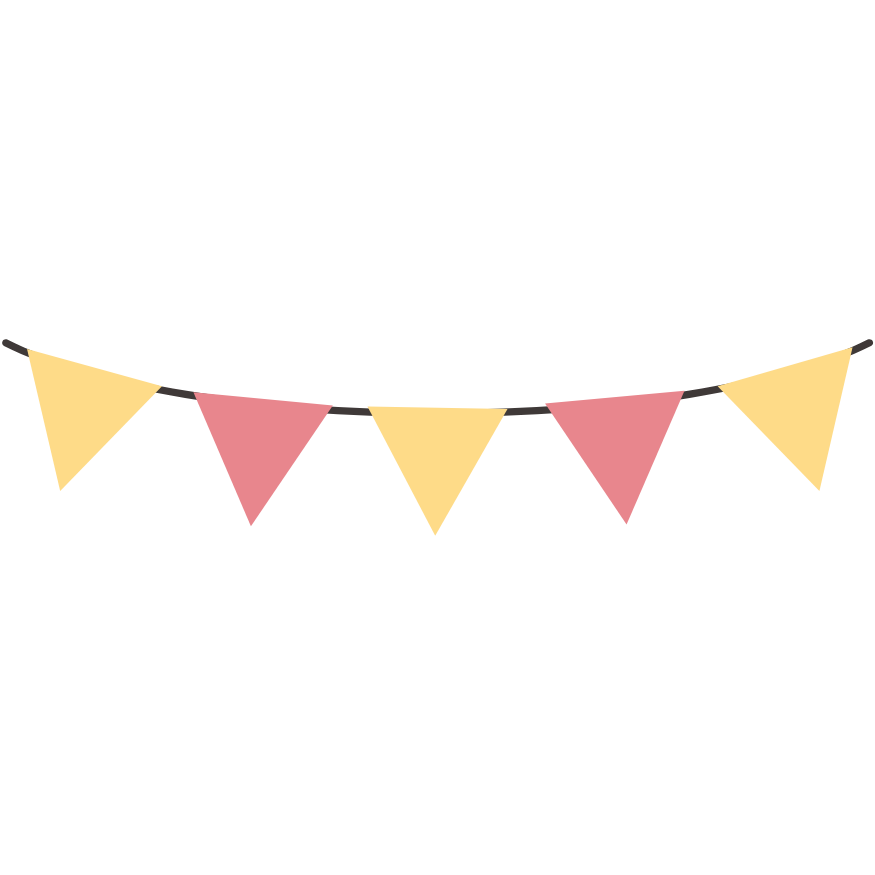
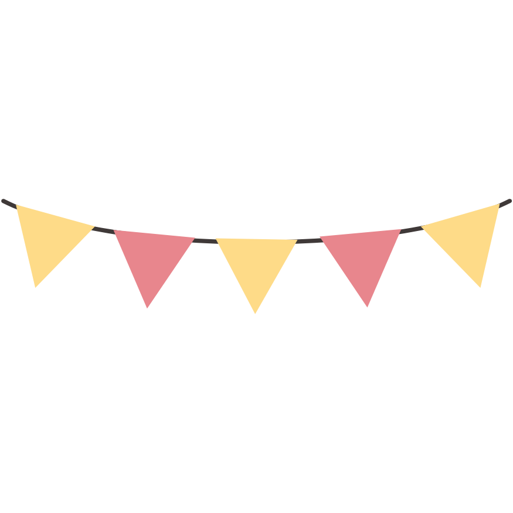

More Fun Facts about my self... i guess
I enjoy identifying plants and flowers around me
YouTube is my go-to anti-stresser
Used to have "Rheumatic Heart" (sna hindi babalik hehe)
I (used to) play Minecraft a lot! (redstone & commands expert?)
I'm Weird
I always study last second
I have 4 cousins in my Father's side, and 19 on my Mother's side!
"Josh" is a common name derived from the word "Joshua", who is the successor of Moses and means, "God is salvation"
I like being immersed in my brain, and being philosophical & introspective
I like documenting my game ideas. Would love to see them come to life
Very open to learing anything... unless if I have a hard time understanding *it* (cough p6)
I'm 99% Anxiety
90% Chameleon
I talk to myself 90.9% of the time hehe
Great fear of public speaking. I'll probably die if you'll place me in the spotlight unprepared
I hate jumpscares & loud noises, esp. in horror games
I have a hard time ranking things/people especially if I need to use the "1 to 10" system
Hearing people talk with a raspy voice makes me wanna cry for some reason
Surprisingly don't like reading. I have a hard time enjoying novels, comics, mangas, and a lot of books
I only enjoy reading children's books and educational books hehe, even so.
I'm a heavy visual & audio learner, can't live without the other. Have a hard time controlling my mind when learning in "only-text"
 
